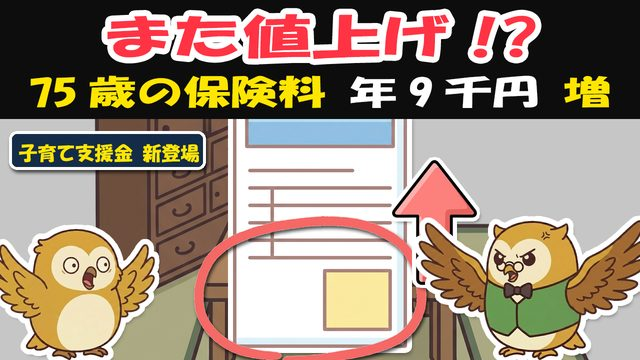

🎁 保険料 見直しチェックシート（7月の通知の見方＋払い過ぎを減らす3つ）

よく来たな。約束の物を渡す。
この1枚は、通知のどこを見るかと、払い過ぎを減らす3つを、はい/いいえで確かめるだけの見直しシートだ。むずかしい言葉は覚えなくていい——当てはまる□に丸をつけて、窓口で読むだけでいい。
① まず「通知」を、捨てずに開く
届いた紙で、次の3か所だけ見ればよい。
□ 均等割……みんな同じ基本料金（携帯でいう基本料）
□ 所得割……前年の収入に応じた上乗せ
□ 支援金分……今年から乗った《子育て支援金》。全国平均で月194円
> 全国平均は、医療分＋子育て支援金で月 約8,183円／年 約9.8万円。住む都道府県と収入で変わるから、あなたの通知の数字が正だ。
② 「割引のもれ」がないか——はい/いいえ
□【はい/いいえ】前年の所得を、市区町村に申告していない
→ はいなら要注意。収入が少ない人・年金だけの人でも、申告して初めて均等割の軽減（7割・5割・2割）が付くことがある。「うちは軽減の対象では？」と窓口で一言。
□【はい/いいえ】去年より収入が下がった／世帯構成が変わった
→ はいなら、軽減の区分が変わることがある。放っておくと高いまま——窓口で見直しを頼む。
③ 「口座振替」に変えると得な人——はい/いいえ
いまは多くの人が年金天引き。だが、こういう人は口座振替に変えると世帯の税が減ることがある。
□【はい/いいえ】あなたの保険料を、税金を払っている家族（子など）が払える
→ はいなら、その家族の口座から振替にすると、その家族の社会保険料控除が増えて税が下がることがある。
→ いいえ（払う家族がいない・自分だけ）なら、天引きのままで不利にはならない。無理に変えなくてよい。
使えるかどうか・向き不向きは、市区町村の窓口か確定申告で確認できる。「うちは使えますか？」と聞くだけでいい。
覚えておく数字（この5つだけ）
| 数字 | 意味 |
|---|---|
| +7.8% | 医療分の値上げ（全国平均・前年比）＝月+約578円 |
| 月194円 | 今年から乗った《子育て支援金》。来年 約250円・再来年 約350円（来年以降は試算） |
| 年 約9千円 | 医療分＋支援金で増える人もいる目安 |
| 月 約8,183円 | 全国平均の保険料（年 約9.8万円）。都道府県と収入で変わる |
| 87.1万円 | 保険料の年間上限（去年80万→+7.1万円）。当たるのはごく一部の高所得（約1%） |

🎁 おまけ（動画では話していない）——「世帯分け」の損得
保険料を下げようと世帯を分ける（世帯分離）話を聞くことがある。だが、これは得も損もある諸刃の剣だ。
- 得になることがある——世帯の所得が下がって軽減が付く／高額療養費の上限が下がる場合。
- 損になることもある——逆に軽減がはずれる、家族の扶養や手当の条件から外れる、介護保険の負担割合が上がる、等。
- だから「自己判断で届を出す前に、必ず窓口でシミュレーション」——「うちは分けると得？損？」と数字で見てもらう。手続きは後からでも遅くない。
保険料は、黙っていれば高いまま乗ってくる。だが、通知を開いて一言たずねれば、払い過ぎは減らせる。
届いた紙を、そのまま置くな。捨てずに開いて、窓口で相談だ。